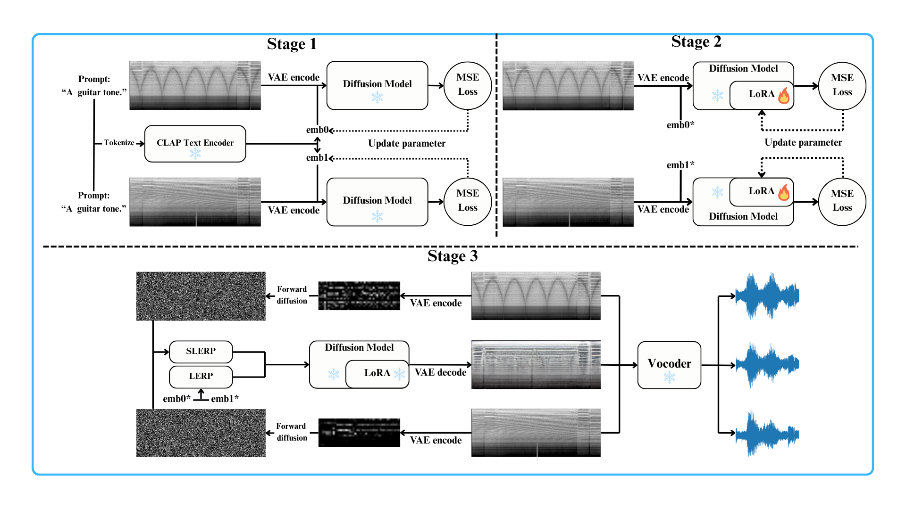
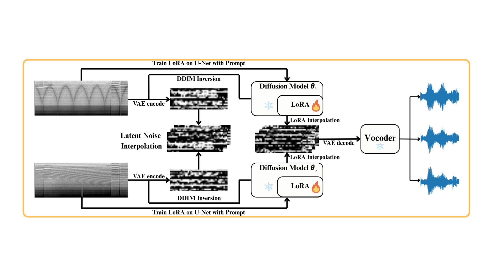
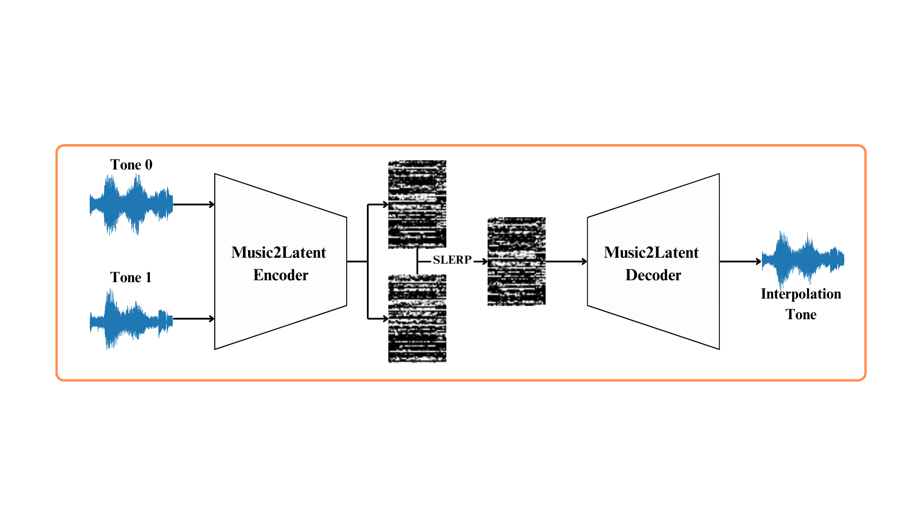

In Music Information Retrieval (MIR), modeling and transforming the tone of musical instruments, particularly electric guitars, has gained increasing attention due to the richness of the instrument tone and the flexibility of expression. Tone morphing enables smooth transitions between different guitar sounds, giving musicians greater freedom to explore new textures and personalize their performances. This study explores learning-based approaches for guitar tone morphing, beginning with LoRA fine-tuning to improve the model performance on limited data. Moreover, we introduce a simpler method, named spherical interpolation using Music2Latent. It yields significantly better results than the more complex fine-tuning approach. Experiments show that the proposed architecture generates smoother and more natural tone transitions, making it a practical and efficient tool for music production and real-time audio effects.
Abstract
Some Interpolation Audio Samples
Tone 1 .wav
Tone 2 .wav
Tone 3 Source .wav
Tone 4 Target .wav
Method Overview
We investigate three model variants for guitar tone morphing: two diffusion-based with different LoRA placements and one lightweight latent interpolation, together with standard interpolation operators. Given two input tones, we encode them into latent vectors and interpolate either in latent space to trace a smooth morphing trajectory, then decode to audio. When content preservation is critical, Adaptive Instance Normalization (AdaIN) is optionally applied to align statistics.
A. Single-Sided LoRA Fine-Tuning

Built on an AudioLDM-style pipeline, this variant uses textual inversion to enrich prompts and then applies LoRA fine-tuning to the conditional U-Net (decoder side) to better align text embeddings with latent features. The unconditional U-Net is independently fine-tuned with a small LoRA rank (e.g., 2) without textual input. At inference time, we perform SLERP on the latent vectors of the two input tones and LERP on their text embeddings. The interpolated representation is then decoded through the unconditional U-Net, the VAE, and the vocoder. Only the decoder is adapted; the encoder remains frozen, enabling expressive tone blending while limiting content drift.
B. Dual-Sided LoRA Fine-Tuning

This variant fine-tunes two U-Nets (conditional and unconditional) for each tone domain, with LoRA rank 2 after textual inversion. At inference, we use SLERP for latent vectors, LERP for prompt embeddings, and additionally perform parameter-space LERP to merge the two U-Nets into a model specialized for the interpolated tone. AdaIN is integrated in the decoding path to match the mean and variance of the output to the interpolated style, offering more precise control over stylistic attributes.
$$\mathrm{AdaIN}(\mathbf{x},\mathbf{y})=\sigma(\mathbf{y})\left(\frac{\mathbf{x}-\mu(\mathbf{x})}{\sigma(\mathbf{x})}\right)+\mu(\mathbf{y})$$
C. Music2Latent Interpolation

This method relies on a lightweight encoder–decoder that reconstructs audio in a learned latent space without diffusion or text conditioning. We encode both inputs, perform spherical interpolation (SLERP) between their latent vectors, and decode back to audio. Although it does not involve fine-tuning, it provides a clean benchmark of latent-space interpolation quality. AdaIN can also be applied during morphing to better align style characteristics and enhance naturalness.
Interpolation
$$\hat{\mathbf{v}}=\frac{\mathbf{v}}{\lVert \mathbf{v}\rVert}, \quad \theta_0=\arccos\!\big(\hat{\mathbf{v}}_0 \cdot \hat{\mathbf{v}}_1\big)$$
$$\mathrm{LERP}(\alpha,\hat{\mathbf{v}}_0,\hat{\mathbf{v}}_1)=(1-\alpha)\hat{\mathbf{v}}_0+\alpha\hat{\mathbf{v}}_1$$
$$\mathrm{SLERP}(\alpha,\hat{\mathbf{v}}_0,\hat{\mathbf{v}}_1) =\frac{\sin\big((1-\alpha)\theta_0\big)}{\sin(\theta_0)}\,\hat{\mathbf{v}}_0 +\frac{\sin\big(\alpha\theta_0\big)}{\sin(\theta_0)}\,\hat{\mathbf{v}}_1$$
Notation. $\mathbf{v}_0,\mathbf{v}_1$ are the latent vectors of the two tones; $\hat{\mathbf{v}}$ denotes $\ell_2$-normalized vectors; $\theta_0$ is the angle between $\hat{\mathbf{v}}_0$ and $\hat{\mathbf{v}}_1$; $\alpha \in [0,1]$ controls the morph progress. LERP is straight-line interpolation in latent space; SLERP moves along the great-circle on the unit hypersphere, preserving constant angular speed and norm.
Results
Perceptual Results
CDPAM ↓ & MOS ↑
We evaluate perceptual quality with CDPAM (↓ better) and a MOS listening test (↑ better). Multi-resolution Spectral Convergence (SC) is additionally computed to diagnose reconstruction fidelity across STFT settings.
TABLE I — Tone Morphing Quality. Lower CDPAM and higher MOS indicate better perceptual quality.
| Model / Setting | CDPAM mean ± std ↓ | MOS ↑ |
|---|---|---|
| AudioLDM — w/o LoRA | 0.32 ± 0.100 | 3.17 |
| AudioLDM — w/ 1 LoRA | 0.45 ± 0.140 | 1.07 |
| AudioLDM — w/ 2 LoRA | 0.22 ± 0.132 | 3.03 |
| AudioLDM2 — w/o LoRA | 0.25 ± 0.120 | 3.30 |
| AudioLDM2 — w/ 1 LoRA | 0.34 ± 0.110 | 2.70 |
| AudioLDM2 — w/ 2 LoRA | 0.33 ± 0.122 | 3.23 |
| MusicLDM — w/o LoRA | 0.85 ± 0.116 | 1.97 |
| MusicLDM — w/ 1 LoRA | 0.19 ± 0.120 | 3.70 |
| MusicLDM — w/ 2 LoRA | 0.08 ± 0.114 | 1.20 |
| Spherical Music2Latent interpolation | 0.13 ± 0.060 | 4.30 |
Spectral Convergence (SC) Results
Decoder/Vocoder & Reconstruction
To further analyze decoder/vocoder behavior, we report multi-resolution Spectral Convergence (SC). The Without VAE block isolates vocoders; the With VAE (reconstruction) block includes VAE decoding to reflect end-to-end artifacts introduced by latent reconstruction.
$$\mathrm{SC}(M_r, M_t) \;=\; \frac{\sqrt{\sum_{m,k}\,\big(M_t(m,k)-M_r(m,k)\big)^2}} {\sqrt{\sum_{m,k}\, M_t(m,k)^2}}\;.$$
Notation. $M_t(m,k)$ is the target magnitude spectrogram at frame $m$ and frequency bin $k$; $M_r(m,k)$ is the reference magnitude spectrogram. The sums run over all time–frequency indices $(m,k)$. We compute SC for multiple STFT settings and average the results; lower is better.
TABLE II — The Reconstruction Spectral Convergence (SC) Loss Result. Lower SC is better.
| Model | Mean | Median |
|---|---|---|
| Without LDM VAE | ||
| BigVGAN | 0.03978 | 0.04005 |
| HifiGAN (AudioLDM) | 0.72955 | 0.15795 |
| HifiGAN (AudioLDM2) | 0.72955 | 0.15795 |
| HifiGAN (MusicLDM) | 0.30206 | 0.15017 |
| With LDM VAE | ||
| HifiGAN (AudioLDM) | 1.80133 | 0.79835 |
| HifiGAN (AudioLDM2) | 0.49473 | 0.13271 |
| HifiGAN (MusicLDM) | 0.46880 | 0.11239 |
| BigVGAN (AudioLDM) | 1.10628 | 0.35980 |
| BigVGAN (AudioLDM2) | 0.50800 | 0.12355 |
| BigVGAN (MusicLDM) | 0.65704 | 0.22113 |
- Best perceptual quality: Direct spherical interpolation in Music2Latent achieves the top MOS (4.3) and one of the lowest CDPAM scores, yielding the smoothest and most natural morphs.
- LoRA is not always beneficial: Depending on the backbone (AudioLDM / AudioLDM2 / MusicLDM) and LoRA placement, perceptual quality can decrease due to content shift or artifacts under limited data.
- SC (diagnostic): Multi-resolution SC highlights decoder/vocoder losses; adding VAE reconstruction exposes end-to-end artifacts typical for LDM pipelines.
Some Reconstruction Audio Samples
Sample 1
Ground Truth .wav
Reconstructed (HifiGAN + MusicLDM VAE) .wav
Sample 2
Ground Truth .wav
Reconstructed (HifiGAN + MusicLDM VAE) .wav
BibTeX
@INPROCEEDINGS{11249227,
author={Chen, Kuan-Yu and Chen, Kuan-Lin and Yu, Yu-Chieh and Ding, Jian-Jiun},
booktitle={2025 Asia Pacific Signal and Information Processing Association Annual Summit and Conference (APSIPA ASC)},
title={Guitar Tone Morphing by Diffusion-Based Model},
year={2025},
volume={},
number={},
pages={329-333},
keywords={Interpolation;Source separation;Instruments;Production;Information processing;Stability analysis;Robustness;Real-time systems;Multiple signal classification;Music information retrieval},
doi={10.1109/APSIPAASC65261.2025.11249227}}